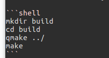
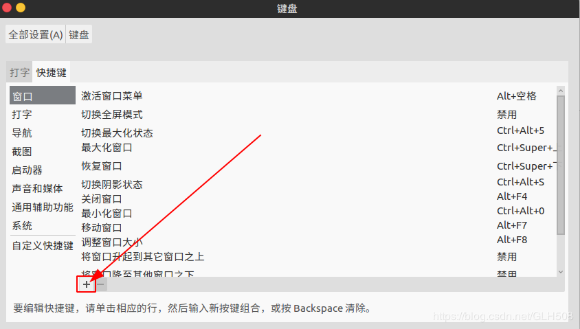
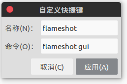
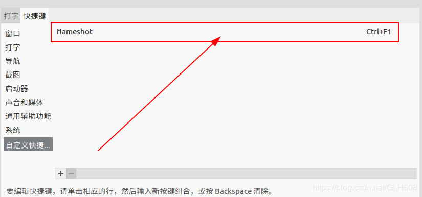

在安装之前先保证ubuntu16.04安装过QT5，并配置好环境变量(配置etc下的profile文件，在最后一行写下如下代码（以下为示例，地址填实际的地址）：
#——qt start——
export QT5_HOME=/usr/lib/x86_64-linux-gnu/qt5
export PATH=${QT5_HOME}/bin:$PATH
#————–qt end————-
);
首先去github上下载flameshot安装包，我之前下过了，附上链接：链接: https://pan.baidu.com/s/1l-pc6ZsLto5-SOwAF9xyFQ 提取码: r954 ，
1.下载之后进入flameshot目录，(命令为：cd 路径/flameshot)
2.根据flameshot里面的README.md 的提示，安装步骤是先在flameshot下创建build,然后进入build，执行qmake ../，之后执行make
)
3.使用qmake之后会出现Unkown module(s) in QT:svg，这个应该是版本不一致导致的，我解决的方法是新开一个终端窗口，输入以下命令（参考至https://stackoverflow.com/questions/21098805/unknown-modules-in-qt-svg/21100312）：
sudo apt-get install libqt5svg5-dev4.然后再继续要执行上面第二步就可以解决Unkown module(s) in QT:svg问题了，走完上面还没有安装好;
5.再输入命令：sudo make install;
6.然后输入flameshot gui就可以打开截图功能了,但是有个缺点，快捷键没有设置;
7.在系统设置—-键盘—快捷键—下面的加号
)
8.在出现的窗口中输入以下信息：
)
9.设置快捷键
)
10.然后就可以使用快捷键ctrl+f1就可以快捷键打开flameshot
11.目前的我的解决方法是如此，有问题欢迎留言互相交流